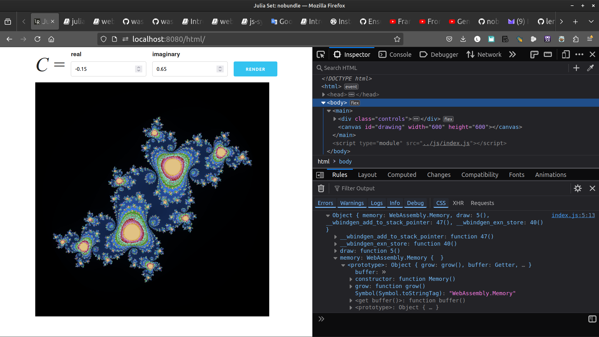

web-sys: Julia Set
While not showing off a lot of web_sys API surface area, this example shows a neat fractal that you can make! _ [wasm-bindgen Guide]
Original [web-sys: Julia Set]
setup the project
cargo new julia_set --lib
cd julia_set
mkdir -p www/js www/html www/css
cargo add wasm-bindgen
cargo add web-sys -F "ImageData, CanvasRenderingContext2d"
Edit Cargo.toml
[lib]
crate-type = ["cdylib"]
and change
web-sys = { version = "0.3.69", features = ["ImageData", "CanvasRenderingContext2d"] }
to
[dependencies.web-sys]
version = "0.3.69"
features = [
"ImageData",
"CanvasRenderingContext2d",
]
the index.html
<!doctype html>
<html>
<head>
<meta content="text/html;charset=utf-8" http-equiv="Content-Type"/>
<meta name="viewport" content="initial-scale=1.0, user-scalable=no"/>
<title>Julia Set: nobundle</title>
<link rel="stylesheet" href="../css/normalize.css">
<link rel="stylesheet" href="../css/skeleton.css">
<link rel="stylesheet" href="../css/style.css">
</head>
<body>
<main>
<div class="controls">
<h1>C =</h1>
<div>
<label for="real">real</label>
<input type="number" name="real" id="real" value="-0.15" step="0.001">
</div>
<div>
<label for="imaginary">imaginary</label>
<input type="number" name="imaginary" id="imaginary" value="0.65" step="0.001">
</div>
<button class="button-primary" id="render">render</button>
</div>
<canvas id="drawing" width="600" height="600"></canvas>
</main>
<script type="module" src="../js/index.js"></script>
</body>
</html>
- download normalize.css
- download skeleton.css
- download style.css
put them in www/css
Next in www/js/index.js
import init, { draw } from "../pkg/julia_set.js"
async function run() {
const wasm = await init().catch(console.error);
console.log(wasm);
const canvas = document.getElementById('drawing');
const ctx = canvas.getContext('2d');
const realInput = document.getElementById('real');
const imaginaryInput = document.getElementById('imaginary');
const renderBtn = document.getElementById('render');
renderBtn.addEventListener('click', () => {
const real = parseFloat(realInput.value) || 0;
const imaginary = parseFloat(imaginaryInput.value) || 0;
draw(ctx, 600, 600, real, imaginary);
});
draw(ctx, 600, 600, -0.15, 0.65);
}
run();
Finaly in Rust code in lib.rs
#![allow(unused)] fn main() { // src/lib.rs use std::ops::Add; use wasm_bindgen::prelude::*; use wasm_bindgen::Clamped; use web_sys::{CanvasRenderingContext2d, ImageData}; #[wasm_bindgen] pub fn draw( ctx: &CanvasRenderingContext2d, width: u32, height: u32, real: f64, imaginary: f64, ) -> Result<(), JsValue> { // The real workhorse of this algorithm, generating pixel data let c = Complex { real, imaginary }; let data = get_julia_set(width, height, c); let data = ImageData::new_with_u8_clamped_array_and_sh(Clamped(&data), width, height)?; ctx.put_image_data(&data, 0.0, 0.0) } fn get_julia_set(width: u32, height: u32, c: Complex) -> Vec<u8> { let mut data = Vec::new(); let param_i = 1.5; let param_r = 1.5; let scale = 0.005; for x in 0..width { for y in 0..height { let z = Complex { real: y as f64 * scale - param_r, imaginary: x as f64 * scale - param_i, }; let iter_index = get_iter_index(z, c); data.push((iter_index / 4) as u8); data.push((iter_index / 2) as u8); data.push(iter_index as u8); data.push(255); } } data } fn get_iter_index(z: Complex, c: Complex) -> u32 { let mut iter_index: u32 = 0; let mut z = z; while iter_index < 900 { if z.norm() > 2.0 { break; } z = z.square() + c; iter_index += 1; } iter_index } #[derive(Clone, Copy, Debug)] struct Complex { real: f64, imaginary: f64, } impl Complex { fn square(self) -> Complex { let real = (self.real * self.real) - (self.imaginary * self.imaginary); let imaginary = 2.0 * self.real * self.imaginary; Complex { real, imaginary } } fn norm(&self) -> f64 { (self.real * self.real) + (self.imaginary * self.imaginary) } } impl Add<Complex> for Complex { type Output = Complex; fn add(self, rhs: Complex) -> Complex { Complex { real: self.real + rhs.real, imaginary: self.imaginary + rhs.imaginary, } } } }
build and serve
wasm-pack build --target web --no-typescript --out-dir www/pkg
http www
open index.html
firefox http://localhost:8000/html/
